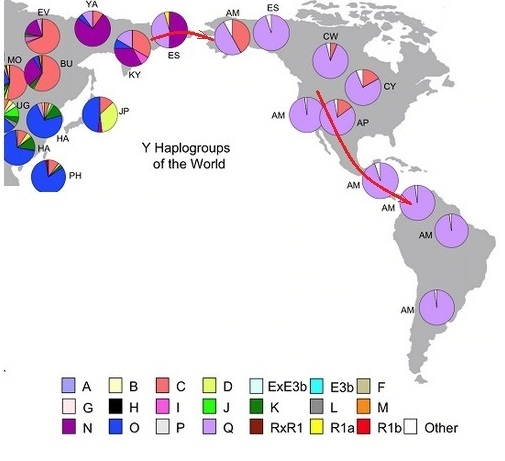
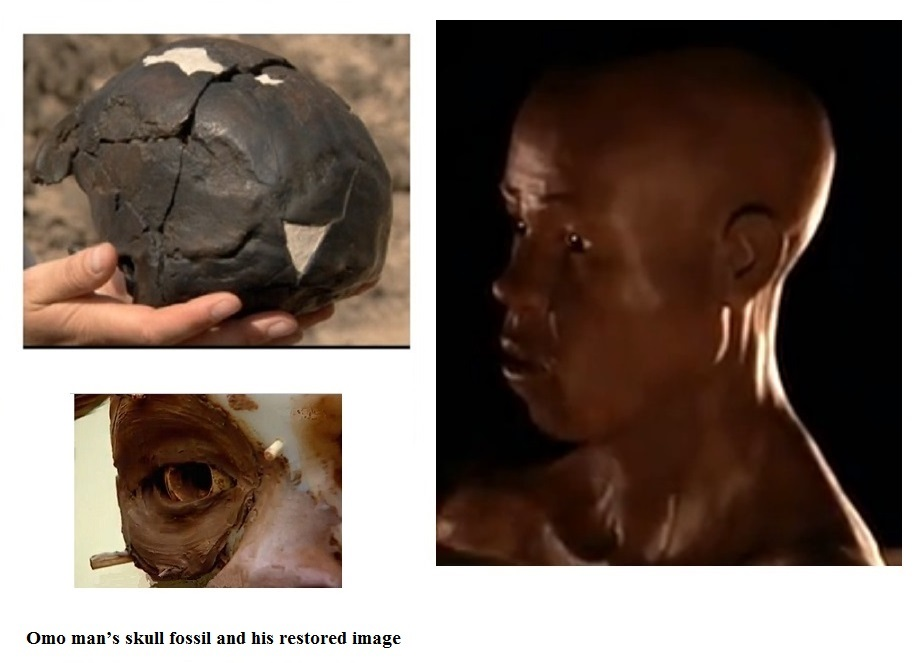
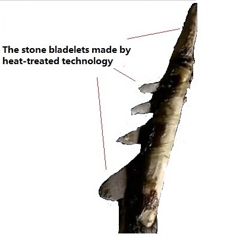
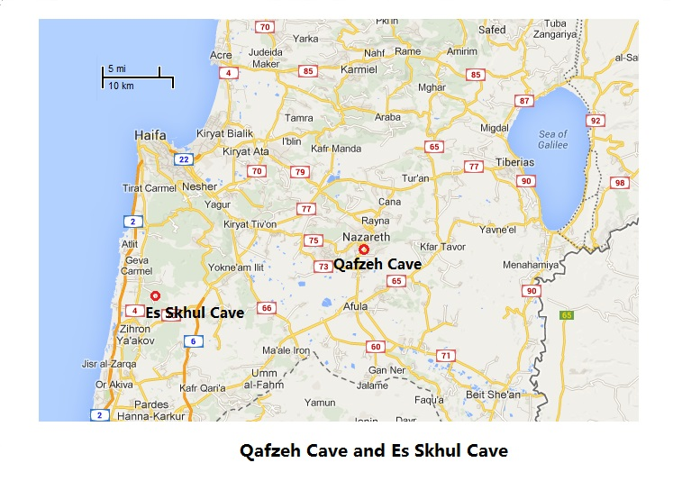

|
Back to Homepage
Part 5 The Journey from the Garden of Eden to the world
Page 1 out of Africa
In the 22005, the huge multinational cooperative project "Genographic Project" involving 10 prestigious research organizations was launched. The total funding of 40 million dollars came from National Geographic Society, IBM and the Waite Family Foundation. By 2010, this organization had collected DNA samples from 100,000 people around the world. Based on these samples, the map of human migration was depicted.
бы. Looking for Mankind's Garden of Eden
Once the molecular anthropologists found the Y chromosome Adam and the Mitochondrial Eve, it was natural for them to ask the questions: which region on earth did they grow up in? Would it be possible to use DNA decoding to look for this place? Yes, we can.
1. The bottleneck effect in molecular anthropology

Figure 5-1 bottleneck effect
During mankind's migration period, only part of the ethnic group migrated. Those ethnic groups who migrated were smaller than those who remained behind. The original place where the immigrants had lived usually has the most ethnic diversity. As shown in the left side of the above figure showing two ethnic groups, but only one ethnic group through the bottleneck.
From Figure 5-2, one can clearly see that the Y chromosome haplogroups diversity were reduced in those ethnic groups who immigrated to the Americas, more so in those who immigrated to South America as compared to North America. This is because over several thousands of years ago human migration was not an easy task. Often, only just a few people would bravely embark on such a journey. In Asia's Siberia region, there are six Y chromosome haplogroups: Q, C, N, O, K, R1a. Once in North America only Q and C entered. In South America, only Q entered. This is a good example of the bottleneck effect.
.

Figure 5-2: The gradual reduction of the American Y chromosome haplogroup diversity during migration
2. human "Garden of Eden" in East Africa
The product of the Genographic Project is the distribution map of the world's DNA haplogroups .This distribution map differentiated the haplogroups in greater detail. Therefore, there are more complicated colors as compared to Figure 5-2. Based on the aforementioned bottleneck's principle, where more haplogroups are found is where Y chromosome Adam and Mitochondria Eve had lived. This location was designated to be in eastern Africa, specifically the East African Great Rift Valley area near Ethiopia and Kenya borders.

Figure 5-3 The distribution map of the world for DNA haplogroups and mankind's Garden of Eden
3. There is not any difference in term of evolution between the aboriginal people in East Africa and other continents
In this area, there are too many ethnic groups in the current aborigines with distinctly different ethnic languages, customs, and decorations. For these reasons, this area has become a place where the tourists love to visit. For a long period of time, the area where they lived was isolated from the world cultures. Therefore, they lived a very primitive life with very low cultural level. However, this does not mean that compared to the developed countries they are different in evolutionary terms.
.
From the Internet, one can find many photos showing how these ethnic groups live. We must not look down on them because they live so primitive. Many DNA samples have been collected from them. From the anthropological viewpoint of DNA decoding, there exists just a one thousandth difference in DNA between the ethnic groups and everyone else on earth. The African aborigines and us are all modern man without any evolutionary differences. We are both descendants of Y chromosome Adam and Mitochondrial Eve and we share the same paternal and maternal lineages.
.
II. Image of the earliest modern man
.
1. Omo Man Fossil
In 1967, paleontologist Richard Leakey and his team discovered tow ancient human skull fossils at the aforementioned mankind's Garden of Eden located in the Great Rift Valley of Ethiopia's Omo river (longitude 35 degrees 55 minutes, north latitude 5 degrees and 24 minutes)(Reference 1). Excavated from deep underground, these two fossils were named Omo I and Omo II and are kept at the National Museum of Ethiopia. The area where these fossils were discovered is now part of the Omo National Park. In 1980, This park was declared a UNESCO World Heritage Site.
Early on, there was a difference of opinion as to the dating of Omo I and Omo II. In the 2005 February issue of Nature magazine, there was a new estimation of the dating of Omo I and Omo II fossils by Ian McDougall-led team from the Australian National University. Using the argon isotope dating method to determine the age of the fossil deposits by the degree of isotope decay, the conclusion was this: Omo I and Omo II lived around 196,000 years plus or minus 5,000 years ago. Therefore, Omo I and Omo II are the oldest fossils of modern man at the present time. Once scientists mistakenly thought that Omo II lived much earlier just because the skeletal bones came from different ethnic groups (Reference 2)

Figure 5-4 Omo man's skull fossil and restored image
In anthropology, there are two hypothesis concerning the origin of modern Homo sapiens, namely from multiple regions and from Africa. Most anthropologists today hold the "out of Africa origin" viewpoint, namely that modern man originated from eastern part of Africa 200,000 to 250,000 years ago. However, there are a few anthropologists who holds "multiple region origin" viewpoint, namely, that modern man originated from Europe, Asia, and Africa. The "out of Africa origin" lacks the critical fossil evidence. For a long period of time, scientists have not found any fossil remains of modern man in Africa during this critical stage in the origin of modern man which dated back to between 100,000 to 300,000 years ago.
When the Herto skulls were unearthed in Ethiopia in 1997, was there fossil evidence dated back to 160,000 years ago. Plus the evidence from the Omo fossils dating back to 195,000 years ago. Undoubtedly, these provided new evidence for the "out of Africa origin". Evidence from fossils and DNA decoding confirm the common belief of most anthropologists: modern man originated from the eastern part of Africa about 200,000 to 250,000 years ago. We can say that Omo man is the ancestor of all modern man on earth. Scientists reconstructed a model of Omo's face by using the skull bone fossil( Figure 5-4).
The technology of reconstruction of facial feature is quite mature thanks to the technical support from modern forensic science, anthropology and computer 3-D techniques. The current method to reconstruct the facial features from clay is start building a plaster model from the skull bones. Then, drill many holes on the plaster model according to anatomical parameters. Next, insert a piece of wood into each hole. The outward protruding length of the wood is equal to the thickness of the soft tissue. The eye socket is then filled with a plastic eyeball. Layers of clay form the facial muscles until all the wooden pieces are covered. Finally, facial features are added with finishing touches on the overall model. To validate this technique, experts in this field don't have to look at the original photo of the person in question. After reconstruction of this person's face with the plaster model, he/she then compares this person's photo with the model. Skilled experts can reconstruct a model which very closely resembles the actual face of the person. Therefore, Omo man¡¯s reconstructed model created by these experts must be quite reliable.
From the figure we can see that his outward appearance is not that difference from us. We can say that his skin color is a mixture of all the skin colors from peoples all over the world. The experts which created the model must have their reason for this skin color. People who live in areas where there is extreme intense sunlight must have darker skin. However, those who live in area without much sun have lighter skin color. Some descendants of ancestors who had lived in areas with intense sunlight for over 200,000 years invariably must have very dark skin as is the case of Africans. Other descendants of the same ancestors who had migrated to areas with less intense sunlight and lived there for tens of thousands of years will have lighter skin color as is the case with the Europeans and Asians. These types of changes in skin coloration have nothing to do with evolution Neither evolution nor regression are involved, merely an adaptation to the living environment.
2. The earliest southern migrants
Dating back to 200,000 to 250,000 years ago when the ancestors of modern man first appeared in Africa's "Garden of Eden" near the Great Rift Valley in East Africa, they became a small ethnic group after tens thousands of years of reproduction. Then, the began to undertake a migratory journey heading north and south.
Scientists discovered the remains of the earliest modern man at the southern tip of Africa at the pinnacle point of Cape Town, South Africa. As a result of archaeological excavations, evidence exists that even during the glacial period there was plenty of vegetables and animal feeds, enough food for a few of the ancient Homo sapiens who lived there.

Figure 5-5 Modern man's earliest migration routes towards the south and north
In recent years, research teams from South Africa's University of Cape Town and Arizona State University conducted a very detailed research into the human remains from the Pinnacle Point's cave. They have confirmed that ancient modern man¡¯s history could be traced back to 164,000 years ago or even earlier. Their report stated:
"Here we describe a previously unrecognized advanced stone tool technology from Pinnacle Point Site 5-6 on the south coast of South Africa, originating approximately 71,000 years ago. This technology is dominated by the production of small bladelets ( microliths ) primarily from heat-treated stone. There is agreement that microlithic technology was used to create composite tool components as part of advanced projectile weapons." (Brown KS, et al. An early and enduring advanced technology originating 71,000 years ago in South Africa, Nature. 2012 Nov 22.)

Figure 5-6 The fine stone blades which might be combined to form a spear from 70,000 years ago
When we see these descriptions, we cannot help but marvel at the wisdom of these ancient people. Even today, it will be quite difficult to use such technology to produce razor sharp stone spears and bows and arrows. These ancient people who lived 70,000 years ago were not less evolved than us. The difference between them and us is merely in the amount of scientific and technological knowledge being accumulated. In terms of wisdom and intelligence, they were not inferior to us.
3. The early immigrants who migrated northward
At the other end of Africa, remains from early immigrants were found. These ancient modern men were called Herto men
In 1997, archeologist Tim White and colleagues discovered three human skulls from an ancient sediment pile near a small village Herto on the Awash river bank 225 KM northeast of Ethiopia¡¯s capital Addis Ababa. Among the human remains was a fairly complete adult skull. The scientists used these bones from the skull and did reconstruction of the face and found that his facial features were typical of both modern man and that of Omo man. In addition to these human remains, scientist also unearthed an amazing quantity of hippopotamus bones, fish bones fossils and more than 640 pieces of processed stone tools including stone axes, and rarely seen stone knives. Subsequently, radiometric dating based on the half-life decay of the radioactive elements from the upper and lower layers at this fossil excavation site and the surrounding soil it was determined that the formation of these fossils dated back to 160,000 years ago. At the present time, this is the most ancient modern man who immigrated northward from the Garden of Eden in Africa.
Compared to this, the remains of modern man who lived outside of the African continent showed that they had lived about 50,000 to 60,000 years later
4. A sketch of modern man living outside of Africa

Figure 5-7 Location of Ancient Fossils in Israel
In the mid 20th century, 10 ancient people¡¯s fossils were discovered in the Qafzeh Cave in Nazareth (Israel). Also in Es Skul Cave, 20 KM south of Haifa, another 10 ancient people¡¯s fossils were discovered (7 adults and 3 children). From the characteristics in their skull bones, they been identified that these characteristics resembled those of the Omo man as well as modern man.
After using different dating methods to find out the period of time when they had lived, the general consensus is that they lived approximately 100,000 years ago. From the surrounding environment during the excavation process, archeologists that these bodies were buried with special burial ritual indicative the possibility of a religious burial ritual. For example, the number 11 skeleton of a child approximately 13 years old buried in a pit excavated from a bedrock at the Qafzeh Cave in 1971, he was holding the antlers a red deer in his hands. We can imagine when his parents buried him the sorrow they must have felt as well as their blessings as he entered another world.
From these two caves, necklaces made out of shells were found. These necklaces could be what ladies wore as decoration at that time. Relics and items for this period we can deduce that their culture had made great progress. These excavated remains are the earliest fossils from those ancient modern men outside of Africa. They must be the first immigrants who left Africa.

Figure 5-8 Human beaded necklaces made from shells 100,000 years ago
However, in this and surrounding regions, no one has found evidence of the ancient life in period of the tens of thousands after 100,000 years. Their descendants have disappeared. How did they get here? Where did their descendant go? To resolve this mystery, archeologists started logical analysis of the natural and geological environment 100,000 years ago.
As we have mentioned earlier, the discovery of the ancient Herto fossils from 160,000 years ago is sufficient evidence that they are our ancestors from the Great Rift Valley, the place of origin, to the northern part of Africa. However, in the next 30,000 years, they could not migrate to more distant places because on their east is the ocean and the north, the Sahara Desert. Thousands of KM of desert is a greater barrier than the ocean.
Recently, the establishment of a computer mathematical modeling based on material from archeological and geographical research, researchers found that 125,000 years ago the climate in North Africa had changed dramatically. Within a few thousand years, the desert became an oasis filled with birds and animals, a picture of life. This dramatic change in climate brought many opportunities to the inhabitants. They must have gradually moved closer to the northern part of the continent with such livable conditions. After thousands, even tens of thousands of years, and many generations, finally, they left the African continent and entered Asia and reached modern day Israel where they settled and reproduced (Reference 4).
However, after 20,000 to 30,000 years, the climate had undergone another change. This time, it brought bad luck to the descendants of the original immigrants. This climate change ushered in a period of drought and desert-like condition to Israel and the northwest region in Asia and the North Africa region. When faced with less and less rainfall, dry grass, and animals dying off, these ancient people had no way to go or retreat from. The once thriving immigrant communities eventually faced complete extinction.
|